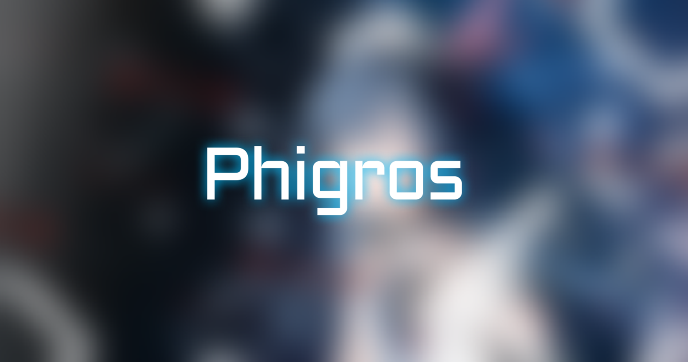

Phi-Plugin 用户设置
以下选项为个人偏好示意，仅用于展示静态渲染效果。
主题风格
当前：使一颗心免于哀伤
控制图片页面的整体视觉风格，仅影响你的个人渲染结果。
默认
使用插件基础主题，结构清晰、辨识度高。
寒冬
清冷偏白的季节风格，整体观感更柔和。
使一颗心免于哀伤
已选中星空主题，画面对比更强，氛围更突出。
大师赛2
赛事感更强的视觉方案，风格利落。
B30均值统计范围
当前：全部统计
控制 B30 均值条使用的数据范围，可按全部、仅 B30 或仅 Top 成绩统计。
全部统计
已选中综合统计全部可用成绩，信息最完整。
仅 B30
只按 B30 成绩统计，关注主榜核心表现。
仅 Top
只按 Top 成绩统计，突出高分段水平。
B30均值条配色
当前：热力红
控制 B30 均值条的主色，用于快速区分你的展示偏好。
热力红
已选中高对比暖色，视觉冲击更强。
耀金
偏亮金色，强调成就感和层级感。
冷静蓝
冷色调方案，信息阅读更平稳。
生机绿
中性偏亮配色，整体观感更清新。
phi-plugin
v0.0.0-demo